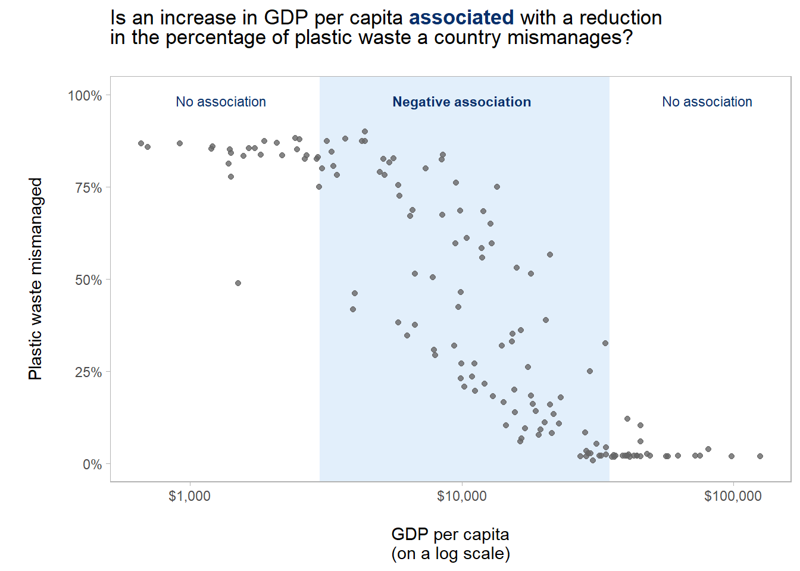
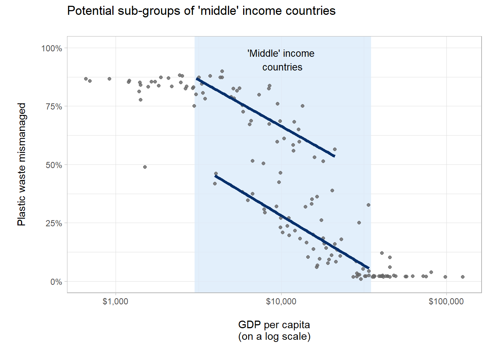
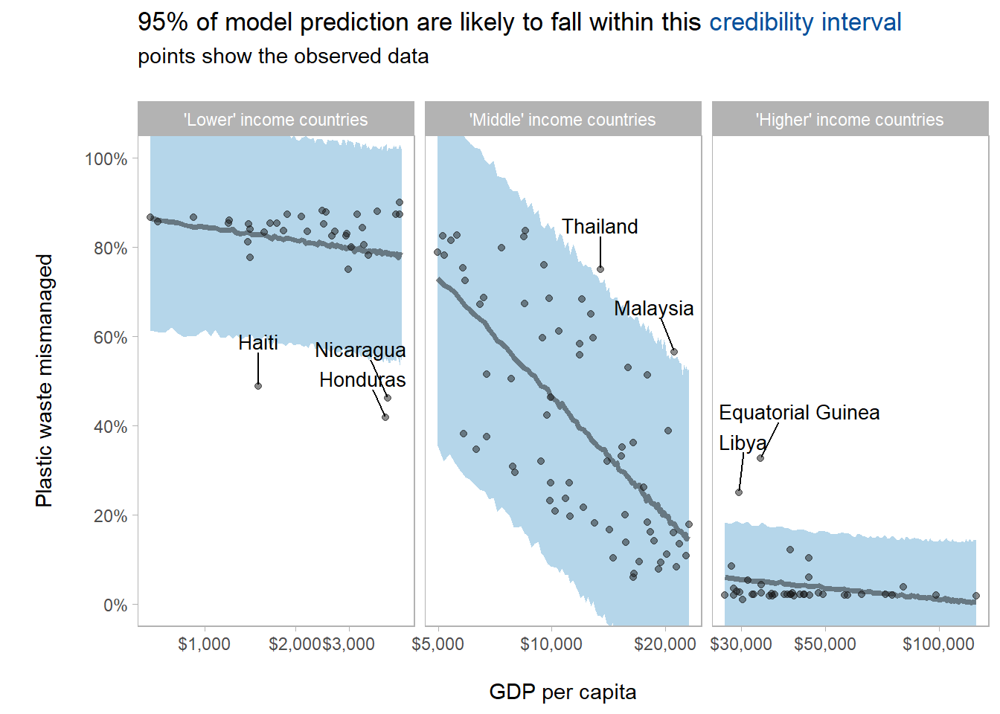

Chapter 3 Estimating the proportion of plastic waste countries mismanage
In this notebook I am again working with some datasets I had found (via #TidyTuesday) which detail how much plastic waste countries produce. See the table below for a few more details on the datasets including the source of the data.
My objective was to develop a model estimates the proportion of plastic waste mismanaged by a country. There is limited documentation available with the datasets, so at the moment I am assuming that mismanagement is being used as a synonym for various forms of disposal activities that have a high environmental impact (dumping plastics in the sea etc.).
I started the modeling process with the idea that GDP per capita might be a helpful feature for estimating the proportion of plastic waste mismanaged. This idea was based economic theories (such as Jevon’s paradox) that suggest:
on one hand that as economies develop their environmental impact can increase through increased resource consumption.
While on the other hand, that as economies develop they can use resources more efficient, so reducing the environmental impact of each unit of a resource that is consumed.
This notebook has five sections:
(This Introduction section) outlining the basic ideas that motivated the analysis;
Importing and cleaning the two datasets needed to develop a model.
Conducting an exploratory data analysis to understand the association between the proportion of plastic waste mismanaged by a country and it’s GDP per capita.
Developing a ‘piecewise’ linear regression model to estimate he proportion of plastic waste mismanaged by a country based on it’s GDP per capita.
Reflecting on the modeling process and identifying next steps.
Dataset used:
| File Names | Variable name in this notebook | Notes |
|---|---|---|
‘data/waste_vs_gdp.csv’ data/mismanaged_vs_gdp.csv |
waste_vs_gdp mismanaged_vs_gdp |
|
3.1 Data importing and cleaning
In order to understand the proportion of plastic waste mismanaged by country, I needed to import two datasets: (1) focuses on the total amount of plastic waste produced; and, (2) focuses on the amount of plastic waste mismanaged. Below I do some very basic cleaning of the data around the variable names to make them easier to work with in the analysis and modeling.
# read in the dataset on waste and gdp
waste_vs_gdp <- read_csv('data/waste_vs_gdp.csv') %>%
# make variables names consistent in terms of case etc.
clean_names() %>%
# clean up variable names including shortening variables names to make them
# easier to work with
rename(country = entity,
country_code = code,
population = total_population_gapminder,
gdp_per_cap = gdp_per_capita_ppp_constant_2011_international_constant_2011_international,
plastic_waste_per_cap = per_capita_plastic_waste_kilograms_per_person_per_day)
# read in the dataset on mismanaged waste and gdp
mismanaged_vs_gdp <- read_csv('data/mismanaged_vs_gdp.csv') %>%
# make variables names consistent in terms of case etc.
clean_names() %>%
# clean up variable names including shortening variables names to make them
# easier to work with
rename(country = entity,
country_code = code,
population = total_population_gapminder,
mismanaged_plastic_per_cap =
per_capita_mismanaged_plastic_waste_kilograms_per_person_per_day,
gdp_per_cap = gdp_per_capita_ppp_constant_2011_international_rate)I know from having previously worked with these datasets that plastic waste data is only available for 2010. Also, there are a few countries with missing values for plastic waste, GDP and population variables. So, in the code below I process the two datasets according removing observations for years other than 2010, and observations where missing data could provide problematic during the modeling process. Then all that remains is to joining the two datasets, which is easy enough given they come from the same source and share primary keys.
# focus down on countries where plastic waste and gdp data is available
waste_vs_gdp_2010 <- waste_vs_gdp %>%
filter(year == 2010,
!is.na(plastic_waste_per_cap),
!is.na(gdp_per_cap))
# focus down on countries where mismanaged waste and gdp data is available
mismanaged_vs_gdp_2010 <- mismanaged_vs_gdp %>%
filter(year == 2010,
!is.na(mismanaged_plastic_per_cap),
!is.na(gdp_per_cap))
# join the two datasets ahead of analysis
waste_mismanaged_gdp <- waste_vs_gdp_2010 %>%
left_join(mismanaged_vs_gdp_2010)3.2 Exploratory data analysis
I started this analysis with a fairly clear idea of what I wanted to do, based on: some theoretical ideas around economic development and environmental impact; and, a previous exploratory data analysis I done with the plastic waste data. So, in this notebook I will keep the exploratory data analysis fairly focused on the task at hand: estimating the proportion of plastic waste mismanaged by country based on economic data available.
The first I thing I need to do is create a few new variables (see code below). This allows me to then calculated the proportion of plastic waste mismanaged by a country (i.e. the variable to estimated).
# reshape data to create target feature
waste_mismanaged_gdp_plot <- waste_mismanaged_gdp %>%
mutate(plastic_waste_tot = plastic_waste_per_cap *
population,
misman_plastic_waste_tot = mismanaged_plastic_per_cap *
population,
prop_plastic_waste_misman = misman_plastic_waste_tot /
plastic_waste_tot) Finally before creating some exploratory visualisation, I just needed to identify the top waste producing countries so these can be labeled within the plot.
# identify top n waste producing country for labelling in plot
top_waste_producing_countries <- waste_mismanaged_gdp_plot %>%
slice_max(plastic_waste_tot, n = 10)# set colour palette for the plot
plot_colour_pal <- RColorBrewer::brewer.pal(9, "Blues")
text_colour <- plot_colour_pal[9]
bg_colour <- plot_colour_pal[2]
# specify plot annoations
annotations <- tibble(
label = c("No association", "**Negative association**", "No association"),
gdp_per_cap = c(1300, 10000, 80000),
prop_plastic_waste_misman = c(0.98, 0.98, 0.98)
)
# specify boundaries of shaded background layer
group_boundaries <- c(3000, 35000)
# create the plot
p <- waste_mismanaged_gdp_plot %>%
# create the base for the plot
ggplot(mapping = aes(x = gdp_per_cap,
y = prop_plastic_waste_misman)) +
# add background colour which emphasis three potential trends
# dependent of gdp_per_capita
geom_rect(aes(xmin = group_boundaries[1], xmax = group_boundaries[2],
ymin = -0.05, ymax = 1.05),
fill = bg_colour, alpha = 0.1) +
# add observations from source data
geom_point(alpha = 0.8, colour = "grey40", size = 1.5) +
# adjust scales to (hopefully) make the plot easier to interpret
scale_x_log10(labels = scales::dollar_format(accuracy = 2)) +
scale_y_continuous(labels = scales::percent) +
scale_fill_viridis_c(option = 'magma', direction = -1,
end = 0.85, begin = 0.15) +
# remove unneccesary legends which might make the plot more confusing to look at
guides(size = FALSE, fill = FALSE) +
# adjust y axis slightly to accomadate annotations
coord_cartesian(ylim = c(0,1)) +
# add plot labels
labs(title = glue::glue("Is an increase in GDP per capita <span style = 'color:{text_colour};'>**associated**</span> with a reduction<br>in the percentage of plastic waste a country mismanages?<br>"),
x = "\nGDP per capita\n(on a log scale)",
y = "\nPlastic waste mismanaged\n") +
# add annotations
geom_richtext(data = annotations,
mapping = aes(x = gdp_per_cap,
y = prop_plastic_waste_misman,
label = label),
fill = NA, label.color = NA,
colour = text_colour, size = 3) +
# tweak visual appearance of the plot
theme(panel.grid = element_blank(), # clean up plot background
plot.title = element_markdown()) # allow text formatingThe first plot (below) shows GDP per capita on a log scale verses the proportion of plastic waste mismanaged. The overall relationship between the two variables is clearly non-linear.
However, alternatively, I could view the plot as showing three different groups of countries each with a different linear relationships between the log of GDP per capita and the proportion of plastic waste mismanaged. The grey vertical lines in the plot below highlight where I estimated by eye the boundaries between these groups to fall. The groups themselves could be described as follows.
Group 1: The ‘lowest’ income countries where up to a threshold (approx. $3,000) increasing GDP per capita does not appear to associated with reductions in plastic waste mismanagement.
Group 2: The ‘middle’ income countries where up to another threshold (approx. $35,000) increasing GDP does appear to be associated with reductions in plastic waste mismanagement.
Group 3: The ‘highest’ income countries where above the second threshold (approx. $35,000) increasing GDP does not appear to be associated with further reductions in plastic waste mismanagement.
These groupings could be explained in terms of countries needing to reach a certain level of economic development before the infrastructure, capabilities and political imperative to effectively manage plastic waste emerge. Beyond this level of economic development a county’s increasing income and wealth allow it to reduce the proportion of plastic waste which is mismanaged. However, as the proportion of waste mismanaged gets closer to the natural limit of zero, reductions in waste mismanagement become harder to achieve. So, beyond a second level of economic development there are few further gains to made in terms of reducing plastic waste mismanagement.
# display the plot
p
Revising the plot helps to highlight the multiple potential trends amongst ‘middle’ income countries. This requires a little the original plot to be tweaked a little in the code below.
# remove layers from previous plot which are not needed for revised plot
p1 <- p
p1$layers[[3]] = NULL
#p1$layers[[2]] = NULL
# subset the data to approximate groups which appear to show different trends
trend_1_df <- waste_mismanaged_gdp_plot %>%
filter(gdp_per_cap > group_boundaries[1] & gdp_per_cap < group_boundaries[2]) %>%
filter(prop_plastic_waste_misman > 0.5)
trend_2_df <- waste_mismanaged_gdp_plot %>%
filter(gdp_per_cap > group_boundaries[1] & gdp_per_cap < group_boundaries[2]) %>%
filter(prop_plastic_waste_misman < 0.5)
trend_3_df <- waste_mismanaged_gdp_plot %>%
filter(gdp_per_cap < group_boundaries[1])
trend_4_df <- waste_mismanaged_gdp_plot %>%
filter(gdp_per_cap > group_boundaries[2])
#' Creates a linear regression line to add to a plot (given subset of the plotting data)
#'
#' @param df: a subset of the waste_mismanaged_gdp_plot dataframe
#' @param c: colour name or hexadecimal reference
#' @param ...: used to pass additional arguments to geom_line
#'
#' @return: a ggplot2 layer object
add_trend_reg_line <- function(df, c = plot_colour_pal[9], ...){
geom_line(data = df,
mapping = aes(x = gdp_per_cap, y = prop_plastic_waste_misman),
stat = "smooth", method = "lm",
se = FALSE,
colour = c, size = 1.5,
...)
}
# revise the plot to highlight the sub trends within the data
p1 <- p1 +
# a linear regression lines to highlight the four trends
add_trend_reg_line(trend_1_df) +
add_trend_reg_line(trend_2_df) +
# add labels and annotations
labs(title = "Potential sub-groups of 'middle' income countries\n") +
annotate("text", x = 10000, y = 0.95,
label = "\'Middle\' income\n countries",
size = 3.5) +
# apply additional plot styling
theme_light() # add back in grid lines a useful reference in this versionRe-plotting highlights that there are two (or potentially three) sub-group of interest within the group of ‘middle’ income countries. Indicating the potential for an interaction between gdp_per_cap and another as yet unidentified (categorical) predictor. I did some quick exploratory plotting with the data to hand and was not able to identify a good candidate for the additional predictor. So, I leave this potential additional predictor and the interaction aside for now and proceed to start the modeling section of this notebook.
# replot
p1
3.3 Modelling: Piecewise linear regression
3.3.1 Fitting the model
Based on the exploratory data analysis above, I decide to create an initial model using piecewise linear regression. This simply involves partitioning the dataset into non-overlapping groups (based on values of predictor variable) and fitting a linear regression model separately to each group. Based on the scatter plots above I also considered fitting a polynomial regression model. However, I went with piece-wise linear regression with hope that it would produce a model where the regression coefficients are easier to interpret (than in a polynomial model). Additionally, working with the piece-wise approach presented an interesting opportunity to apply some function programming techniques I have been learning recently (but I’ll return to the practicalities of implementation in the code comments below).
The first stage in piecewise linear regression modeling is to partition data. In the exploratory data analysis I estimated by eye the boundaries for partitioning based on gdp_per_cap. In the modeling I want to apply a hopefully more rigorous approach to identifying the boundaries. So, in the code below I use a piecewise regression algorithm from the segmented package to estimate the boundaries (referred to as breakpoints in the algorithm output below). Note, that in the output below the breakpoints are on a log transformed scale.
# there were difficulties using the log transformation in the formula
# when estimating breakpoints
# so I the data needed preprocessing
waste_mismanaged_gdp_mod <- waste_mismanaged_gdp_plot %>%
mutate(gdp_per_cap = log(gdp_per_cap))
# stanglm objects are not compatible with the estimation algorithm
# so I used lm instead
lm_1 <- lm(formula = prop_plastic_waste_misman ~ gdp_per_cap,
data = waste_mismanaged_gdp_mod)
# run algorithm to estimate break points
segmented::segmented(lm_1, seg.Z = ~ gdp_per_cap,
# starting points for the break point estimation algorithm
# indentified by eye from the plot above
psi = c(8.0, 10.5))## Call: segmented.lm(obj = lm_1, seg.Z = ~gdp_per_cap, psi = c(8, 10.5))
##
## Meaningful coefficients of the linear terms:
## (Intercept) gdp_per_cap U1.gdp_per_cap U2.gdp_per_cap
## 1.13980 -0.04269 -0.35059 0.35316
##
## Estimated Break-Point(s):
## psi1.gdp_per_cap psi2.gdp_per_cap
## 8.409 10.241Having defined the boundaries for partitioning the dataset into three groups, the next step was to run the same linear regression modelling workflow for each group. I took this as an opportunity to apply some functional programming techniques I been learning over recent months. See comments in the code below for comments on the implementation.
# define boundardies (on gdp_per_capita) for piecewise regression
gdp_bound_1 <- 4500
gdp_bound_2 <- 27000
# create a new variable to identify which of the three groups an observation belongs to
segmented_data <- waste_mismanaged_gdp_mod %>%
mutate(gdp_per_cap = exp(gdp_per_cap),
income_group = case_when(
gdp_per_cap < gdp_bound_1 ~ 1,
gdp_per_cap < gdp_bound_2 ~ 2,
TRUE ~ 3
))
# create an indivudal data frame for each group of observations
nested_segmented_data <- segmented_data %>%
group_by(income_group) %>%
nest() %>%
rename(lm_in = data)
# run the modelling workflow for each group of observationa
segmented_models <- nested_segmented_data %>%
mutate(
# independently fit a linear regression model to get of the three groups
stan_glm = map(.x = lm_in,
.f = ~ stan_glm(
formula = prop_plastic_waste_misman ~ log(gdp_per_cap),
data = .x,
refresh = 0)),
# extract regression coefficients for each group (used in analysis below)
coef = map(.x = stan_glm,
.f = ~ broom.mixed::tidy(coef(.x))),
# ahead of using the model to predice create a data grid of predictors points # for each group
data_grid = map(.x = lm_in,
.f = ~ data_grid(
.x,
gdp_per_cap = seq_range(gdp_per_cap, n = 100))
),
# for each predictor point in the data grid get a dataframe of draws from
# the posterior predictive distriubtion
# used for calculating the creditibilty interval shown in the plot below
data_grid = map2(.x = data_grid, .y = stan_glm,
.f = ~ add_predicted_draws(.x, .y)),
bayes_r2 = map(.x = stan_glm, ~ as_tibble(bayes_R2(.x)))
) %>%
# re-arrange to ensure plot facets and table of coefficients are in
# in a sensible order
arrange(income_group)Then I constructed the plot itself.
# focus in on the draws from posterior predictive (for each group of countries)
plotting_df <- segmented_models %>%
select(-stan_glm, -lm_in, -coef) %>%
unnest(data_grid)
# define readable labels for the plot facets
facet_labs <- c("\'Lower\' income countries",
"\'Middle\' income countries",
"\'Higher\' income countries")
names(facet_labs) <- c("1", "2", "3")
# identify which countries (lying outside the credbility interval)
# should be labeled
country_labels <- segmented_data %>%
filter(
(income_group == 1 & prop_plastic_waste_misman < 0.5 ) |
(income_group == 3 & prop_plastic_waste_misman > 0.2) |
(income_group == 2 & gdp_per_cap > 13000 & prop_plastic_waste_misman > 0.74)|
(income_group == 2 & gdp_per_cap > 20000 & prop_plastic_waste_misman > 0.55)
)
# create plot
p <- plotting_df %>%
# plot base
ggplot(aes(gdp_per_cap, `.prediction`)) +
# add credibility interval
stat_lineribbon(.width = c(.95),
alpha = 0.5,
colour = "grey10",
fill = plot_colour_pal[5]) +
# add observed data
geom_point(data = segmented_data,
mapping = aes(gdp_per_cap, prop_plastic_waste_misman),
colour = "grey10", alpha = 0.5) +
# format axis
scale_x_log10(labels = scales::dollar_format(accuracy = 2)) +
scale_y_continuous(breaks = seq(0,1,0.2),
labels = scales::percent) +
# seperate each section of the piecewise model
# to make the plot easier to interpret
facet_wrap(~income_group, scales = "free_x",
labeller = labeller(income_group = facet_labs)) +
# label points lying outside the credibility interval
ggrepel::geom_text_repel(data = country_labels,
mapping = aes(gdp_per_cap,
prop_plastic_waste_misman,
label = country),
min.segment.length = 0.1,
nudge_y = 0.1,
size = 3.5) +
# adjust y axis to omit area of the crediblity interval which fall outside
# plausible values (i.e. outside ther ange 0-100%)
coord_cartesian(ylim = c(0,1)) +
# add plot label
labs(x = "\nGDP per capita",
y = "\nPlastic waste mismanaged\n",
fill = "Credibility interval",
subtitle = "") +
# remove legend which is visual clutter and doesn't aid plot interpretation
# in this case
guides(size = FALSE) +
# remove grid lines to focus attention on credibility intervals
theme(panel.grid = element_blank())The plot below shows a 95% (Bayesian) credibility interval for the regression model. This corresponds to an expectation that approximately 95% of model predictions will fall within the credibility interval. Although we see almost all of the observed data falls within the credibility intervals, the plot also highlights some potential issues with the model fit.
In places the credibility interval are over 50 percentage points wide. When of course observation can only fall in the range between 0 and 100% of plastic waste being mismanged. At least for ‘middle’ income countries this reflects this seems to reflect to some extent the variance of the observation. Which in turn of course suggest that including other predictors would potentially improve the model fit.
The credibility interval, and hence samples from the posterior predictive which underpin these intervals, extend beyond the possible observable range for percentage of plastic waste mismanaged.
# choose an interactive or static plot
# interactive plot was used during analysis to hover over and indentify points
# outside the credibility intervals
interactive_plot <- FALSE
if (interactive_plot) {
plotly::ggplotly(p)
} else {
p + labs(
title = glue::glue(
"95% of model prediction are likely to fall within this <span style = 'color:{plot_colour_pal[8]};'>credibility interval</span>"),
subtitle = "points show the observed data\n") +
theme(plot.title = element_markdown())
}
3.3.2 Interpreting the model coefficients
Having fitted the model and used the posterior predictive distribution to show the uncertainty in the model’s prediction, I wanted to look at the model coefficients in more detail. The first step was to extract and combine the coefficients for each of the three models that make up the overall piecewise regression.
# get the coefficients for the three models
summary_table_1 <- segmented_models %>%
select(-stan_glm, -lm_in, -data_grid, -bayes_r2) %>%
unnest(coef)
# format table
summary_table_1 %>%
kableExtra::kable() %>%
kableExtra::kable_minimal()| income_group | names | x |
|---|---|---|
| 1 | (Intercept) | 1.1314382 |
| 1 | log(gdp_per_cap) | -0.0417206 |
| 2 | (Intercept) | 4.0432000 |
| 2 | log(gdp_per_cap) | -0.3882044 |
| 3 | (Intercept) | 0.4284576 |
| 3 | log(gdp_per_cap) | -0.0361674 |
Based on the coefficients in the table above, the overall piecewise model can be expressed in mathematical notation as follows.
\[ y_{i} = \begin{cases} 1.13 - 0.04\ln x_{i} + \epsilon_{1} &\text{if } x_{i} < 4500 \\ 3.99 - 0.38\ln x_{i} + \epsilon_{2} &\text{if } 4500 \leq x_{i} < 27000 \\ 0.55 - 0.05\ln x_{i} + \epsilon_{3} &\text{if } x_{i} \geq 27000 \end{cases} \]
Where: \(y_{i}\) is the estimated value of the proportion of plastic waste mismanaged for the ith point; and, \(x_{i}\) is the value of gdp per capita for the ith point.
Interpreting the coefficents of \(x_{i}\) is relatively straight-forward:
For ‘lower’ income countries (\(x_{i} < 4500\)): a one percent increase in
gdp_per_capis (approximately) associated with a reduction of 0.04 percentage points in the percentage of plastic waste mismanaged.For ‘middle’ income countries (\(4500 \leq x_{i} < 27000\)): a one percent increase in
gdp_per_capis (approximately) associated with a reduction of 0.38 percentage points in the percentage of plastic waste mismanaged.For ‘higher’ income countries (\(x_{i} \geq 27000\)): a one percent increase in
gdp_per_capis (approximately) associated with a reduction of 0.05 percentage points in the percentage of plastic waste mismanaged.
However, directly interpreting the intercept terms is more challenging. First, this is because the intercept terms correspond to the expected proportion of plastic waste mismanaged for a country with zero GDP per capita. And, of course such a country does not and arguably could not exist. Secondly, the intercept terms for ‘low’ and ‘middle’ income countries do not lie within the range 0 to 1 (i.e. the possible values for a proportion). In general, these type of challenges with interpreting intercept terms can be addressed by subtracting an appropriate offset (often the mean or median) from the predictor values so the intercept term corresponds to the expected value of y for a sensible value of x. However, in this case due to the piecewise nature of the model offset would complicate interpretation further.
3.3.3 Some quick diagnostics
Finally, ahead of considering what steps would be need to develop the model further, I wanted to do a more formal (but very quick) assessment of how well the model performs in estimating the proportion of plastic waste mismanaged for in sample data.
# convenience function for mapping median to a specific dataframe
calc_r2_median <- function(df){
return(median(df$value))
}
# convenience function for mapping median to a specific dataframe
calc_sd_obs <- function(df){
return(sd(df$prop_plastic_waste_misman, na.rm = TRUE))
}
summary_table_2 <- segmented_models %>%
# focus on columns needed to produce summary statistics
select(income_group, lm_in, bayes_r2, stan_glm) %>%
# calculate summary stats for each group of countries / segment of the model
mutate(r2 = map_dbl(bayes_r2, ~ calc_r2_median(.x)),
plastic_misman_sd_obs = map_dbl(lm_in, ~ calc_sd_obs(.x)),
abs_residuals_mean = map_dbl(stan_glm, ~mean(abs(residuals(.x))))) %>%
# focus on columns needed to convey the key information
select(-lm_in, -bayes_r2, -stan_glm) %>%
# add text description of country groups to aid interpretation of the table
add_column(income_group_desc = c("\'Lower\' income countries",
"\'Middle\' income countries",
"\'Higher\' income countries"),
.before = "r2")
#mean(abs(residuals(segmented_models$stan_glm[[2]])))The table below shows the Bayesian R2 values (bayes_r2 - the proportion of variance explained by the model) and the mean of the absolute values of the residuals for each group of countries. For context, the standard deviation of the proportion of plastic waste mismanaged in the observed data is shown in the plastic_misman_sd_obs column.
Clearly overall the model is not performing particularly well.
The R2 values for the ‘lower’ and ‘higher’ income groups of countries both being below 0.05. Basically,
gdp_per-capexplains almost none of the variability in the outcome variable in these group. However, it should be noted there is not much variability of the proportion of plastic waste mismanaged in the observed data (as shown in theplastic_misman_sd_obscolumn), and the absolute values of the residuals tend to be relatively small.The R2 value for the ‘middle’ income group of countries is higher at approximately 0.46. This of course means that the proportion of variance unexplained by the model is 0.54. While the absolute values of the residuals tend to be relatively large. Both these factors highlight the need to further develop the model to improve it’s ability to estimate the proportion of plastic waste a country mismanages.
summary_table_2 %>%
kableExtra::kable() %>%
kableExtra::kable_minimal()| income_group | income_group_desc | r2 | plastic_misman_sd_obs | abs_residuals_mean |
|---|---|---|---|---|
| 1 | ‘Lower’ income countries | 0.0353142 | 0.1137020 | 0.0650874 |
| 2 | ‘Middle’ income countries | 0.4585049 | 0.2520905 | 0.1555382 |
| 3 | ‘Higher’ income countries | 0.0423899 | 0.0613529 | 0.0342624 |
3.4 Reflections and next steps
In this notebook I developed a simple model developed above for estimating the proportion of plastic waste a country mismanages, based on it’s GDP per capita. Comparing the observed values with the model’s estimates of the proportion of plastic waste a country mismanages showed that for many countries the model estimates are disappointingly inaccurate. Nevertheless, the model developed in this notebook represents a first step towards developing a more complex and potential more accurate model. As and when I return to further develop the model my next steps would include:
Exploring additional data sources to identify additional potential predictor variables (such as metrics might give an indication of the maturity of country’s disposal system or it’s waste disposal culture).
Engineering the feature of model input data including iteratively integrating additional predictor variables and interactions into the model.
Comparing the fit piecewise model in this notebook with a model using interactions between
gdp_per_capitaand a variablegdp_per_capita_group(which partitions countries in to one of three groups).